Over the past decade, telecardiology has been transforming medical treatment. From allowing for better patient monitoring to lowering costs, telecardiology provides benefits for all cardiology patients. But how can telecardiology benefit the Northern Arizona community? This research project will utilize Northern Arizona Healthcare’s telecardiology pilot study to review how telecardiology may specifically aid Northern Arizona. This will be done by analyzing patient surveys, monitoring data, and faculty interviews. The results will help NAH understand how telehealth and telecardiology may improve patient health and satisfaction. My hope is that this project demonstrates the benefits telecardiology and telehealth may provide for Northern Arizona, bringing more necessary healthcare to the community.
Monitor, Manage, Empower: Cardiac Telehealth Senior Research Project Begins!
February 21, 2024 1:27 pm
Hey everyone,
Welcome to my blog and senior project! Hopefully, this introductory post can answer some questions to help you better understand both myself and this project. I’m super excited to be working on it, so I’ll go ahead and jump in!
Who Am I?
I’m Nathan! When I’m not writing blogs or working on research I can usually be found hiking, running, walking, and just overall moving. I also am a minor history nut, so don’t be surprised if I cram in some obscure history facts here and there.
(I’m the tall one in the back)
What am I doing?
For this project, I joined Northern Arizona Healthcare’s (NAH) telecardiology pilot study to assess how telemedicine (specifically telecardiology) can aid in patients’ satisfaction and availability of care. To access this, I will analyze patient data from self-monitoring kits and surveys that were collected throughout the study. I will also look at geographical data to calculate travel costs. I will conclude my research with a publishable research paper that NAH can use. For more information, I have linked my proposal here. (Please read it. It is my baby)
(NAH West campus A.K.A my new office) Credit: John Burcham
Why do this?
Having family up in rural Montana has taught me that easy healthcare access isn’t something everyone has, including Northern Arizona. Hopefully, this pilot study can give better insight into how telecardiology could benefit Northern Arizona residents and lead to more studies and telemedicine programs at NAH. Everyone deserves healthcare access, and if I can help even slightly increase healthcare access, then I have achieved my research goal.
What have I done so far?
While writing my proposal, I looked into prior research on telecardiology via research papers and literary reviews. In December and January, I received training on workplace safety, patient confidentiality, ethical research, and more through NAH. I also created a schedule to help me keep track of my goals for each week. I have also unexpectedly familiarized myself with the patient side of NAH by undergoing an emergency abdomen surgery.
What am I doing this week?
On Tuesday, I had an internship introductory meeting with NAH and realized how much I can’t wait to work with them! Everyone was very kind and supportive. I will be taking off the rest of the week due to needing some extra recovery time from surgery. Next week, I plan to have another meeting with NAH on Monday as well as sort my prior research into this table:
I am super excited to begin working on this project! Thank you for reading this blog post and coming along on this research journey with me.
Till next week!
Nathan (P.S. I promise the titles and blogs will get better)
Entering The Magical World Of Evidence Based Practice (Week 1)
February 27, 2024 11:30 am
Hey everyone,
Welcome back to another weekly blog post! Since I last posted, I’ve been busy recovering, binging Egypt’s Lost Wonders, and diving deep into evidence-based practice. It was an exciting week, and I can’t wait to share more, so let’s begin!
What Have I Been Up to?
Last week, after posting my blog, I mostly spent time recovering and anxiously counting down the minutes until I could start working on my project again. Monday, I got to the hospital bright and early to get my badge and officially begin my internship! I also visited my new workplace. Once that was done, I joined a meeting explaining evidence-based practice and quickly found a new fascination.
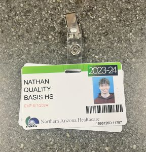
My badge might not work yet, but at least I look official now
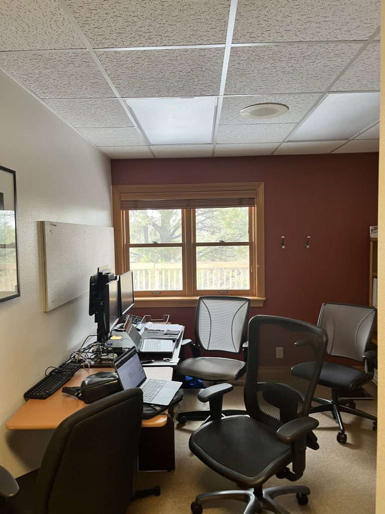
Might need a few extra chairs. i don’t think there’s enough yet.
What Is Evidence-Based Practice (EBP)?
Evidence-based practice is a process that reviews, analyzes, and translates the latest scientific evidence in conjunction with clinical expertise and patient values to provide the best patient care. Put simply, EBP’s goal is to use published research to improve patient care. There are multiple models for how to use evidence-based practice, including the ARCC EBP model, which both NAH and I will use.
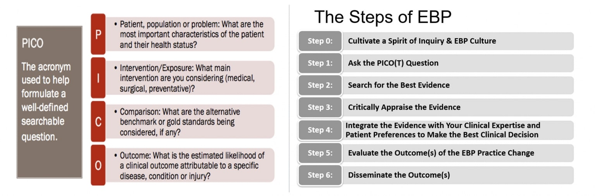
There is also a T in PICO(T) which stands for Time.
I will use evidence-based practice as a framework for both my research question and my continuing look into prior research. Using the PICO(T) template, I will rewrite my research question so that I can have a more clear understanding of what I should be researching. From there, I will use the EBP table posted last week, adding a column to rank how helpful each research paper is, to organize my research. Overall, EBP will help me better understand what I should be researching for my project, as well as provide a framework to interpret the research that I find.
What Will I Do This Week?
This week, I will focus on using EBP and my EBP table to organize and further my research into heart failure, telemedicine, and telecardiology. On Wednesday, I will have a meeting to review how to analyze qualitative data and evaluate survey responses. On Thursday, I will have a meeting to go over how to conduct interviews. My research and analysis skills taken from biology and statistics class will definitely be tested this week. Still, the EBP table and meetings will help me build these skills further.
Quick Reflection
I’ve learned a lot this week. First, this project will definitely be taking up more of my time than I originally thought (which, honestly, I’m kinda happy about). Second, working is all about scheduling, whether it’s for meetings, workflow, or a quick snack break with friends; I’ve never been more glued to my calendar and email, wondering when to plan out my life. Third, I’ve enjoyed every single part of working for NAH. I can’t wait for what’s to come.
Nathan
Building Skills And Tables (Week 2)
March 5, 2024 11:01 am
Hey everyone,
Welcome back to another weekly blog post! Since I last posted, I’ve been researching, fighting technology, attempting Excel, and grinding out Stardew Valley. Last week’s theme was definitely one of learning. Let’s get into some of the nitty-gritty of it:
What Have I Been Up to?
Last week, I had a meeting with Alejandra about analyzing quantitative data, one with Keli about properly conducting interviews and ways to form interview questions, and a Cultural Comparison meeting that delved into how healthcare workers can empathize with patients of various cultures. These meetings alone taught me a ton. Alejandra and Keli gave me better insight into how I want to tackle my survey analysis and interviews, while the Cultural Comparison meeting reminded me of the importance that culture and empathy play in healthcare.
I also took a crash course on using Excel. After a couple of hours of guides and videos, I can confidently say I am now bad at using Excel (I can use it, though!). Jokes aside, I am becoming better at using its various tools, and I have no doubt I’ll be a pro at using it by the end of the project. When not struggling to learn Excel, I fought various technologies, from the front door card reader to my phone and computer. Luckily, I was eventually able to get all of these things working, thanks to a couple of calls to IT and even gained access to the survey results and data.
Evidence-Based Practice Table Update
Last week, I also continued to work on my EBP table. Here is an example of how it looks:
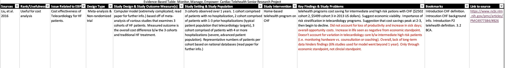
It’s been really useful in categorizing my research, especially since I added the extra bookmarks and Links columns. So far, I have mostly finished entering the research papers found in my proposal and begun adding research on Heart Failure. For finding new research papers to add my PICO(T) question has been very useful: In rural northern Arizonan patients with Heart Failure (P), does telecardiology (I), via self-monitoring kits, decrease hospital visits and care costs while also increasing patient satisfaction (O) when compared to having no access to telecardiology (C)?
What Will I Do This Week?
This week, I will continue to focus on adding to my EBP table, particularly more research papers on telecardiology and rural patients. I will also have a meeting to go over heart failure and outpatient treatment and conduct an interview with NAH’s Virtual Care team. Finally, I plan to start brainstorming how I will analyze the survey results and data.
Quick Conclusion
From all the new software I’ve begun using to social skills, it’s been one jam-packed week of learning. I’m so grateful for Alejandra, Keli, and everyone else who’s helped me through all of it, including the other seniors I’m lucky to be working beside (check out Sedona, Delaney, Kei, Sarah, and Aiyana!). I’ll be off on Spring Break next week, but don’t worry, I still plan to post. So, till next time!
Nathan
Spring Break! (Week 3)
March 17, 2024 6:30 pm
Hey everyone,
I hope you all had an amazing spring break! I’m sad that it has to end, but I’m also excited to begin work on my project again. Here’s an update on what I’ve been up to, as well as what I accomplished before the break started.
What Have I Been Up to?
Absolutely Nothing!!! Ok, maybe not nothing, but I had a pretty chill spring break. I started it off by watching Dune Part 2 with my family, and it was really good. Definitely better than the last one. Then I spent Monday abducting a bunch of my friends to drive around town with. Sedona and I also went on a nice walk around and back behind Foxglenn Park, which was amazing! It was the first long walk since my abdominal surgery, so I loved just being outdoors and being able to move again. I also hung out with friends and caught up with some I hadn’t talked to in a while. Yesterday, I watched The Sixth Sense (I did not see that twist coming!) and then played a board game called Mind the Gap with my family. I did pretty decent in the first game. During the second game, though, I got stuck on Boomer Music trivia and lost by a long shot (I swear none of those 50s artists actually exist!). Overall, I had a pretty laid-back spring break, though I also got some things done for the project.
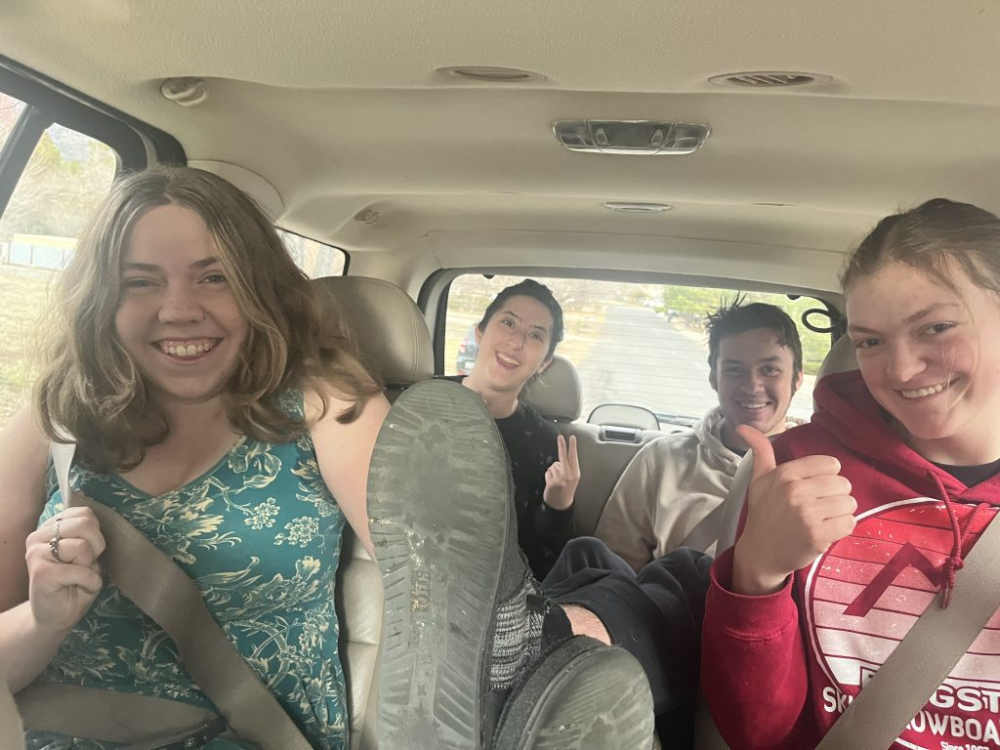
My captured Friends. left to right: Delaney, Sophia, Josh, Wesley
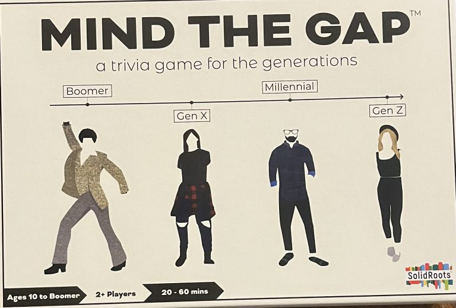
Still don’t believe those 50’s artists were real
What Project Work Did I do?
Before the break began, I met with Dani to learn more about the physiology of the heart and Heart Failure. It was a super helpful meeting, and I plan on having another follow-up with Dani soon to go over Heart Failure Treatments. I also met with Nicole and Travis from the NAH Virtual Care team. From that meeting, I understood what virtual care is at the hospital, its plans and support for further future growth, and how my project relates to the program and bring some benefit for them. They also gave me some extra resources and discussed giving me access to some more later. It was a super informative meeting, and I’m honestly still digesting everything discussed. I plan to have a weekly meeting with Nicole so I can keep communicating and learning from Virtual Care. I’ll talk more about the meeting and what came out in my next two blog posts.
During the break, I added all the studies I had found to the EBP Table. While I’ve “finished” the EBP table, I will continue looking for studies to add (the more the merrier!).
Any Goals For Next Week?
My two goals for next week are to continue planning meetings and begin analyzing the survey data.
Spring break was a breath of fresh air, but I’m ready and excited to start working again full-time on my project. I’ll update you soon on how the beginning of the week went!
Nathan
A Title (Week 4)
March 20, 2024 10:32 am
Hey everyone,
Spring Break is officially over (don’t worry, I’m crying too). This means it’s time for me to switch out of my pjs and start working on my project again. So, here’s a little update on what I did yesterday and my renewed goals for this week:
What Have I Been Up to?
Yesterday, I dusted off my badge and went back to the office. There, I met with Alejandra and the others to go through an Excel crash course. While I’ve been studying the software, it was great to learn some extra tips and tricks, like making a duplicate copy of the data before working on it (sadly, I would not have thought about that on my own). I also met with Floye to review my weekly goals and schedule some more meetings. Finally, I ended the day by commenting on blog posts and reviewing the survey data.
What Are My Goals For This Week?
Meetings! Lots of Meetings. This week, I plan to meet with Nicole to begin our weekly meetings and narrow down what additional information and data Virtual Care could give me. Depending on that coversation, I might also have a meeting with Paula to go over maybe adding to the IRB. I will also meet with Dani to discuss treatments and treatment methods for Heart Failure patients. I’m still setting up shadowing opportunities, so I’ll wait to give an update until I have specific dates.
My second goal is to begin analyzing the survey data. Gone will be the training wheels, which are my fake data spreadsheet! It’s time to begin real analysis. The plan is to create some pivot tables and then go from there. I’ll explain what exactly I end up doing next week.
Pictures?
I had some complaints last week that Sedona wasn’t included in the pictures, so this is for you Sedona!
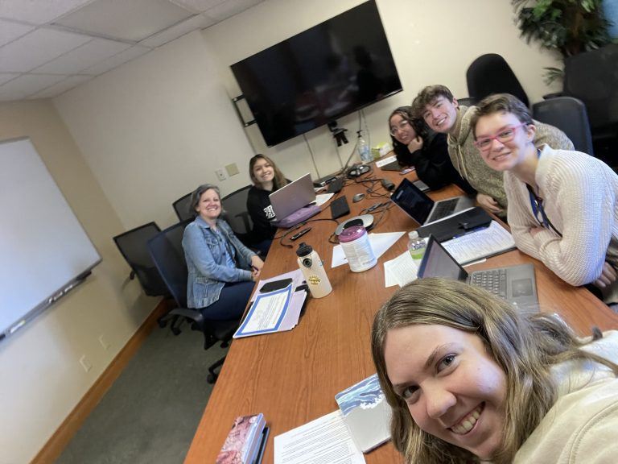
Here’s the gang and I in a previous meeting with Keli!
Though this is a short update, I hope it gave some further insight into my plans for this week. Next week, I’ll dive deep into data analysis, so prepare yourselves!
Nathan
A Quick Update/Heart Failure Guide Part 1 (Week 5)
March 27, 2024 3:55 pm
Hey everyone,
This week, I want to do something different. So, instead of a lengthy update on what I’ve been up to, I’ll share a lengthy update all about heart failure! I know this might not sound like a very fun or exciting idea, but I promise heart failure is more interesting than you think (it will also most likely affect you one way or another eventually). Plus, I’m dying to start sharing what I’ve learned so far, and this will serve as great practice for my final presentation.
Since this little guide I’m creating is a bit long, I will be posting 2 blog posts this week. This first one will cover the basics of the heart and heart failure. The following post will go over treatment and prevention. Without further ado, here’s a quick update and pt. 1 of my heart failure guide:
What Have I Been Up to?
Last week, I sat down with Nicole and was able to look at how the monitoring kits function from both the patient and provider sides. I also met with Dani to go over heart failure treatments. Finally, I worked on data analysis. I’m still figuring out how to best use Excel, so I still need some time before I go into detail about the analysis. Luckily, though, Alejandra will be meeting me again this week, so I’ll be able to get some help from her. Next week, I’ll explain more about the kits and how the analysis is going.
Guide to Heart Failure Part 1:
What is Heart Failure (HF)?
Heart failure, put simply, is when the heart cannot pump enough blood for the body, resulting in a variety of symptoms and, ultimately, death. It is a severe chronic condition that affects approximately 6.5 million Americans.
How Does a Healthy Heart Function?
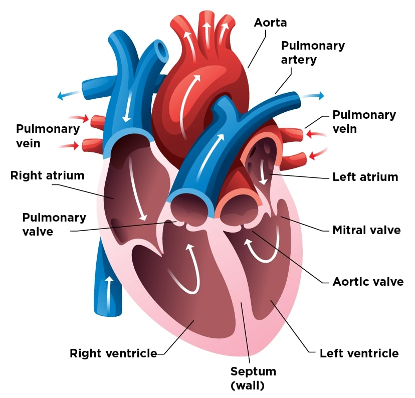
Source: UMPC Children’s Hospital of Pittsburgh
First, oxygen-depleted blood travels from the body to the right atrium and into the right ventricle. The right ventricle then pumps the oxygen-depleted blood into the lungs. The now oxygen-rich blood then re-enters the heart into the left atrium and then the left ventricle. Finally, the left ventricle pumps out the oxygen-rich blood to the rest of the body.
How does a Heart Going Through Heart Failure Function?
In the beginning, the heart, in an attempt to keep up with its workload, starts to contract more strongly and enlarge. This increased contraction strength initially causes the heart muscles to grow bigger and stronger, allowing the heart to pump faster. Other parts of the body also help to compensate for the heart’s lack of power. The blood vessels will begin to narrow in an effort to maintain high blood pressure, and the kidneys will expel less salt and water so that blood volume and pressure can be increased. These measures work at first, which is why there are few to no initial symptoms of HF. However, over time, the heart will continue to weaken until severe symptoms and loss of functions occur.
What are the types of Heart Failure?
There are two types of HF: left-sided HF and right-sided HF. Left-sided HF is the most common and occurs when the left ventricle cannot pump enough oxygen-rich blood out of the heart and into the body. A normal heart has an ejection fraction, the percentage of blood the heart pumps per beat, of around 55-60%. In left-sided HF, the ejection fraction varies due to being either systolic or diastolic failure.
Systolic failure is when the left ventricle cannot contract normally, meaning the heart no longer has enough power to pump enough blood into circulation. Systolic failure usually has an ejection fraction of 40% or less. Diastolic failure is when the left ventricle can no longer normally relax due to muscle stiffness. This causes the heart to be unable to properly fill with blood between each beat. Diastolic failure usually has an ejection fraction of 50% or higher.
Right-sided HF is when the right ventricle cannot pump enough blood causing blood to back up into blood vessels. Right-sided HF usually occurs due to left-sided HF, which causes blood to back up into the lungs and right ventricle and atrium, resulting in the right ventricle to weaken.
What Are The Symptoms of Heart Failure?
There can be many symptoms of HF. Here is a chart with some of the most common:
Source: heart.org
Questions, Comments?
I hope this was both semi-exciting and informative (I also hope you’re still reading this, lol). If you have any questions, find any mistakes, or just have an idea of what I could add or change to this guide, please let me know (as long as it’s constructive, I do have feelings). I want to make sure this guide is both informative and truthful, and I would love to make any changes that are recommended. I’ll post part 2 sometime tomorrow. PLEASE READ IT!!! Thanks.
“What Is Heart Failure?” National Heart Lung and Blood Institute, U.S. Department of Health and Human Services, www.nhlbi.nih.gov/health/heart-failure. Accessed 27 Mar. 2024.
Welcome to the Heart Failure Guide Part 2! In this post, I’ll cover treatment, prevention, and more. Before I begin, I just want to thank Dani at NAH. She’s been helping me learn and understand heart failure for a couple of weeks now, and without her, I would definitely not have learned as much as I have. So, thank you Dani! Now, here’s part 2:
Heart Failure Guide Part 2:
How are People Diagnosed With Heart Failure (HF)?
Diagnosis of HF usually begins at a regular checkup (why it’s so important to have a primary care provider). If the patient is experiencing any of the HF symptoms described in part 1, they should tell their provider. From there, the provider might order blood tests and/or imaging tests, like an echocardiogram. Based on these tests, a diagnosis of HF might occur. If diagnosed with HF, the provider will provide recommendations for cardiologists if the patient is not already seeing one and give the next steps to take. Depending on the severity of the patient’s condition, other paths to diagnosis and care might be taken. Everyone is different, and there is no one path to diagnosis and treatment.
What Are The Stages and Classes of Heart Failure?
When diagnosing HF, providers will categorize the patient’s condition into which stage and class of HF fits best. This aids the provider when deciding on patient treatment. Here are the stages and classes of HF:
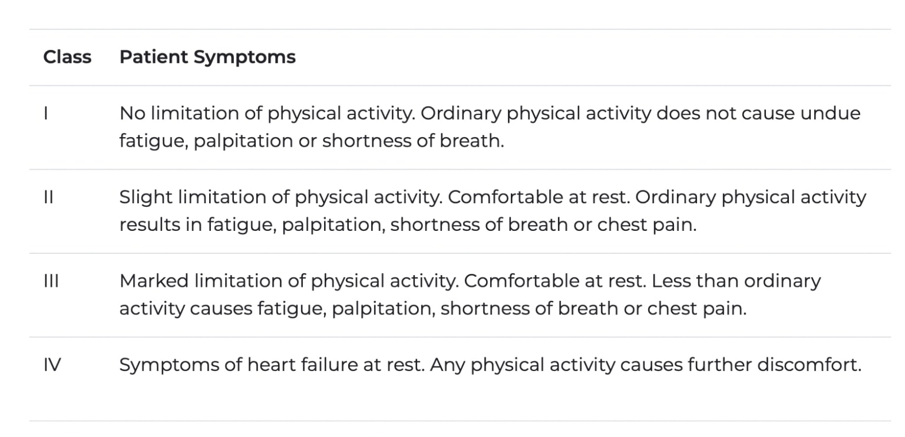
Source: heart.org
What Are The Treatment Options For Heart Failure?
Many times, patients diagnosed with HF will have a treatment plan with various types of treatments. Treatment plans are decided on an individual basis by the provider and the patient. Every patient is unique, and treatment plans should reflect this. Here are some of the treatment options available:
While not the end-all solution, simple lifestyle changes greatly aid in managing HF. Monitoring weight, fluid intake, and blood pressure daily can help ensure medications are working and that health targets are met. Patients with HF can also significantly increase and maintain happy and healthy lives by incorporating adequate rest, physical activity, stress management techniques, a low-sodium diet, and keeping up with their vaccinations. Many providers will give patients guides like the one below to help patients monitor and change their lifestyles:
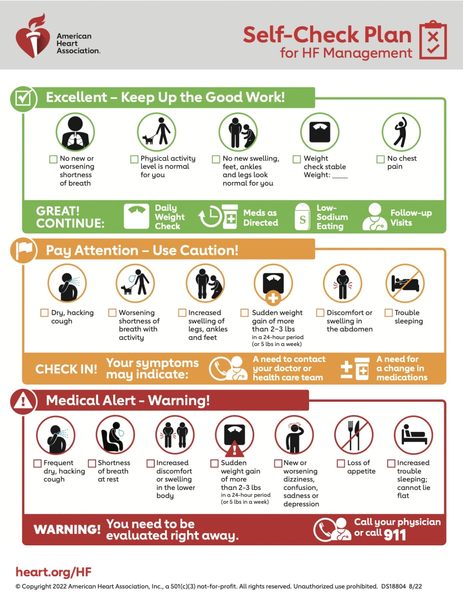
Medications also play a huge role in managing and treating HF. From beta blockers that help control blood pressure to diuretics that help the body expel excess liquid and beyond, medications are a fantastic tool for managing HF. Coupled with monitoring, medications can also easily be adjusted or switched out depending on patient needs.
Surgical devices and procedures are sometimes necessary for treating HF. Implantable cardioverter defibrillators (ICDs) are lifesaving devices that can quickly detect arrhythmias (irregular heartbeats) and shock the heart back to normal rythme. Other devices like a left ventricle assist device (LVAD) can pump blood for the heart and act as a bridge to heart transplantation. Sometimes, in severe HF cases, a heart transplant is the only viable option. In other cases, surgeries like a heart valve replacement or coronary valve bypass can help remove stress on the heart.
Some other treatments include cardiac rehab and cardiac resynchronization therapy.
What Are The Risks and Causes For Heart Failure?
There is no one cause of HF. That being said, the two most common factors for developing HF are age and having previous heart conditions. As age increases, the heart weakens, worsening the progression of past conditions. Some possible past heart conditions that could lead to HF are a past heart attack, abnormal heart valve, heart muscle disease or inflammation, heart defects at birth, and abnormal heart rhythm.
Some risk factors for HF are coronary artery disease, high blood pressure, type 2 diabetes, metabolic syndrome, hyperactive thyroid problems, aging, smoking, obesity, alcohol or drugs, some radiation and chemotherapies, low red cell count, family history, and race. All these risks can increase the chance of a HF diagnosis.
How Can I Decrease The Risk of Heart Failure?
While some risk factors are out of your control, maintaining a healthy lifestyle can help in decreasing the risk of HF. Having healthy eating habits, like staying away from high-fat meals, can keep your arteries and heart happy and clear from blockages. Adding daily exercise into your daily routine can keep you fit and enable your heart to work more efficiently. Healthy stress management tactics can help relieve not only your mental stress but also stress on your heart. These and many more healthy lifestyle habits will allow you to not only be healthier and happier but also mitigate your risk for HF. Click here to learn about more healthy habits.
Why Does This All Matter?
HF is a universal problem. In the US alone, over 10% of deaths yearly are due to or involve HF. I bet everyone reading this has or had known at least one person diagnosed with HF. For me, it’s my Grandpa. While there are factors that can’t be controlled, there are still many ways to decrease the risk for HF. There are also many ways to manage and maintain a happy and healthy lifestyle while having HF. If you take anything from reading this guide, take away the need to maintain healthy lifestyles. The nicer you treat your body, the nicer it will treat you.
Questions, Comments?
I hope this was informative (and still not too boring). If you have any questions or see something I should change or add, tell me! I’m gonna go take a nap now, but I’ll see you guys again next week.
“What Is Heart Failure?” National Heart Lung and Blood Institute, U.S. Department of Health and Human Services, www.nhlbi.nih.gov/health/heart-failure. Accessed 27 Mar. 2024.
Data Analysis Update And Mini CHF RPM Guide (Week 6)
April 3, 2024 11:41 am
Hey everyone,
Since last week, I’ve been continuing to work on my survey data analysis as well as learning more about the CHF remote patient monitoring kits and system that NAH uses. I also had the chance to listen in on a CHF RPM kit setup call. Here’s some more information about the data analysis and a mini CHF RPM kit guide:
How is The Data Analysis Going?
As mentioned briefly last week, I met with Alejandra to review Excel and pivot tables. During that meeting, I got a better understanding of how and when I should use a pivot table and also learned how to clean up my data a bit more for analysis. Since that meeting, my analysis has gone way smoother, and I can pretty confidently say I will be able to go over the results in next week’s blog post! Between learning Excel and the data analysis itself, these past two weeks have been both the most rewarding and challenging of this internship.
Mini CHF RPM Kit Guide:
What Do The CHF RPM Kits Contain?
Each kit contains a tablet, pulse oximeter, scale, blood pressure monitor and cuff, accessories and charging cables, starting guide, checklist, and welcome pamphlet. Here is what it all looks like:
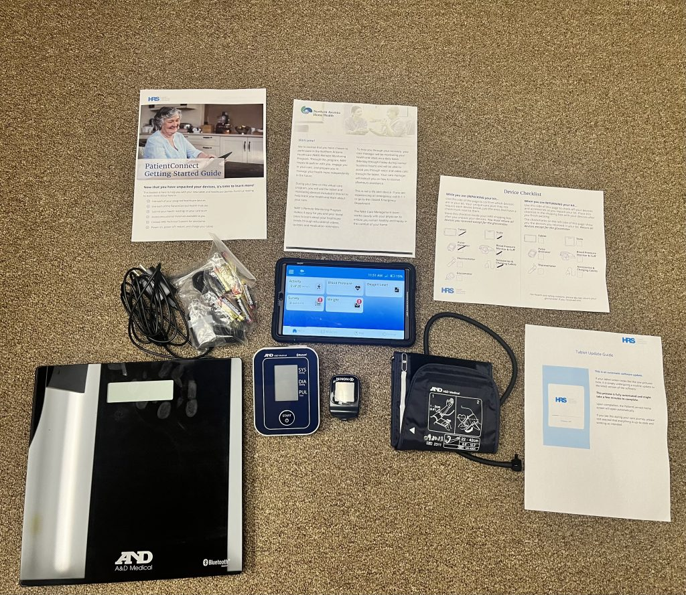
How Do Patients Set Up The RPM Kits?
When patients first receive the kits, either one of their CHF nurses, RPM monitoring managers, or both will call and walk them through the process. Here’s what happened during the call I listened in on:
First, a CHF nurse navigator, Matt, asked the patient about their symptoms in the last 24 hours. Then, Nicole asked the patient to get the CHF RPM kit and if any relatives could help set it up. Once the patient’s daughter arrived, Nicole instructed them to open the box, pull out the tablet, and read off a code on the back. Using the code, Nicole and Matt imputed the code into the RPM system and activated the kit. The patient and daughter were then instructed to test the kit to ensure it worked. Once the readings were received from the patient, Matt promised to call again in a couple of days to walk them through the first day of using the RPM kit. The call then ended after answering some questions from the daughter. Some issues occurred during the call, including frequent disconnections due to poor service and an understanding that a new kit on a different cellular service should be sent out to replace the current one. Overall, the patient and daughter seemed happy and understood all the instructions.
How Do The CHF RPM Kits Work On The Patient Side?
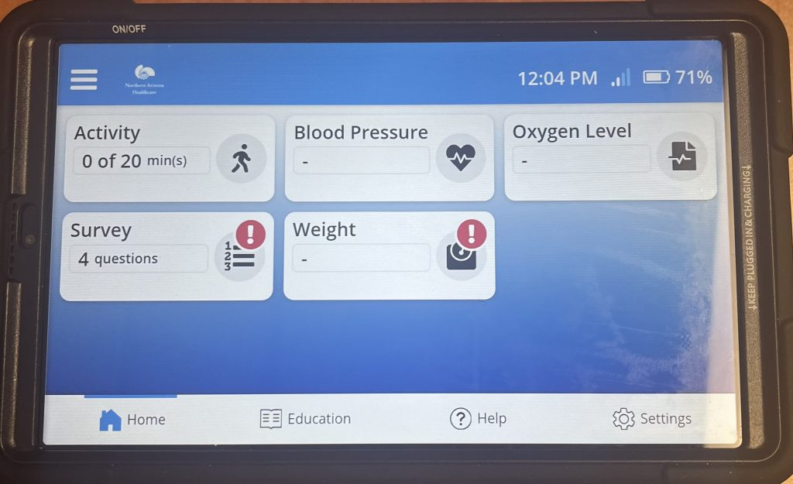
The tablet serves as the kit’s main interface. Its home screen displays all daily readings and survey questions. The patient can also access education, help, and settings tabs. When taking daily readings, like weight or blood oxygen, all the separate tools automatically connect and send readings to the tablet, so there is no manual input. From there, the readings and survey results are sent to the RPM managers at NAH.
How Do The CHF RPM Kits Work On The Hospital Side?
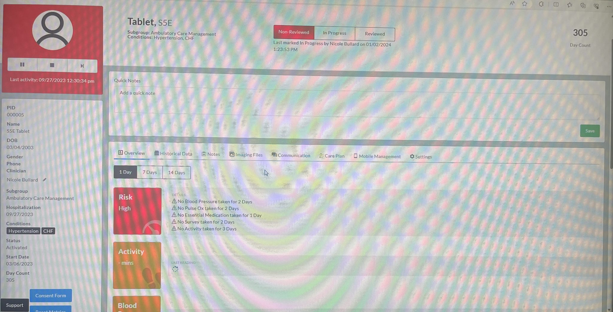
I did my best when taking this picture
After receiving readings and surveys from the tablets, they go into the RPM managing platform. On this platform, RPM managers can access and view the readings and surveys of all patients. Each patient has a dedicated page that RPM managers can look at. Each page contains an overview, historical data, notes, imaging files, communications, care plan, mobile management, and tablet settings tab. These tabs allow managers to do many things, like change when patients receive reading notifications or compare their weight readings over long periods, something especially helpful when looking for weight gain due to HF. Patient readings are color-coded depending on criteria set by their type of condition to help managers quickly view and help patients with worsening symptoms. For example, if an HF patient gains 6 pounds overnight, the reading would become red to indicate to the manager that they should check on the patient. There are many more features and uses currently in the platform, with more like AI on the way.
What Are My Future Goals?
This week, I plan to finish my data analysis. Floye also wants me to start working on the methodology and results section of my research paper, with the goal of completing the rough draft by next Friday. I plan to travel down to Tucson this Friday, so I’ll need to work a little harder in the coming days (so I can party all weekend long!). I’m super excited to finish my analysis, and I can’t wait to share it with you all next week. Until then, have a great week!
Nathan
Plugging Holes And An Incredible Shadowing Experience (Week 7)
April 9, 2024 11:10 am
Hey everyone,
Welcome back to the blog! Since last week, I’ve run into some issues with the survey data and had the chance to shadow Sarah at the HF clinic. Here’s some more information:
How Much Analysis Have I Done?
After my wonderful conversation with Alejandra, I began working on finishing up my analysis. Specifically, I broke down the survey data into more pivot tables, charts, and tables for more straightforward analysis. During this time, I found some holes and mistakes in the data. While I have since fixed these issues, it caused me to not quite finish all my analysis yet. This leaves me trying to finish the analysis and write down my results this week before leaving for my Ethics Bowl Nationals trip.
What Holes and Mistakes Did I Find?
When looking at the completion dates for the post-surveys, a couple of dates were missing. While this makes sense for the two participants who didn’t end up not taking the post-survey, it didn’t make sense for the other four who had. After talking with Julie, I could fill in a couple of those dates, but not all.
Another issue I ran into was calculating how long each study participant was enrolled in the RPM program. 2 of the 12 participants were still enrolled when the Excel spreadsheet was made, so I didn’t have an end date for them. To solve this, I had to figure out when the data was pulled and use that date as their end date.
The last major issue I ran into was analyzing a question that asked participants to rate their satisfaction with the program from 1 to 10. While similar questions gave entirely positive answers, the participants all gave numbers between 3 and 5. After double-checking with Julie and Paula, it turned out that the question given to participants was on a scale from 1 to 5, not 1 to 10.
While none of these issues were crippling, they still took me a while to understand and resolve.
Where and Who Did I Shadow?
Yesterday, I had the opportunity to shadow Sarah, a nurse practitioner, at the NAH Cardiovascular Center.
How Was The Experience?
It was incredible! During my time there, I observed a variety of patient appointments. In between appointments, Sarah explained the process of meeting with patients and filling out patient charts. I also learned more about various cardiac conditions and treatment plans and the importance of medicine costs for patient treatment, as some patients can’t always afford the “best” medicine. It was the best experience for understanding what a typical day in healthcare looks like. I definitely want to pursue a job like Sarah’s.
What Is My Goal For This Week?
This week, I aim to finish my analysis and write the results part of my research paper. Since I will be on my Ethics Bowl trip starting Thursday, I won’t be able to work much this week. To make up for this, though, I plan to write my methodology while on the various planes. I will post a blog post explaining the survey questions and my results later this week or early next week. Until then, wish us luck at Nationals!
Nathan
Survey Results And Writing! (Week 8)
April 18, 2024 10:16 am
Hey everyone,
Besides placing 4th at Ethics Bowl Nationals, I’ve been busy finishing up analysis and starting work on my research paper. Here’s a quick update about my week, followed by some explanation about the surveys and the results:
What Did I Do Over The Weekend?
Last weekend, I attended the Ethics Bowl Nationals at UNC at Chapel Hill. Through two days of competing, one accidental disqualification, and tons of BBQ and sweet tea, our team took 4th place! It was a fantastic experience, and I already miss everyone. You’ll definitely be seeing me competing at the collegiate level next year.
To be honest, not a lot. Ethics Bowl completely took over my mind last week, so I didn’t have a chance to work too much on my project. However, after meeting with Alejandra, I have fully finished my analysis. Now, I’m turning it into my research paper results section. I’m also in the process of writing my methodology.
Survey and Results Guide:
What Surveys Were Given Out?
Throughout the study, participants were given three surveys: an enrollment, a completion, and a patient satisfaction survey. I’ll go through each individually, explaining the questions and the basic answers given (I’ll save the more in-depth analysis and discussions for the research paper and presentation).
Enrollment Survey
Questions?
What year were you born?
What is your gender?
Diagnosis of hypertension (HTN) or congestive heart failure (CHF)?
How do you identify?
What is the highest level of education you completed?
How often have you smoked tobacco in the last 6 months?
How often do you have a drink containing alcohol?
What is your current blood pressure? (Cerner)
How often do you check your blood pressure?
How often do you take your medication?
Basic Results?
The average age of participants was 64 years old.
There were 11 males and 2 females.
There were 3 participants diagnosed with HTN and 9 diagnosed with CHF.
I’m still figuring out how to word these results best, so I’ll save that information for the research paper.
Goals For The Future?
Work on my research paper! It is time to grind it out so I can start working on my presentation next week. Wish me luck!
Nathan
Even More Writing (Week 9)
April 24, 2024 11:06 am
Hey everyone,
I can’t believe we’re almost at the end of this project! This last week, I’ve continued focusing on writing, writing, and even more writing. Here’s some more info:
How is The Research Paper Going?
Yesterday, I met with Floye to go over my research paper outline. Here is what we came up with:
Title
Abstract (do at the end/might not do at all)
Introduction
HF and HTN
Telemedicine/telemonitoring
Study Area (N. AZ, NAH, etc.)
Importance of research
Methodology
Type of research & research question
Design of Study & Participation Requirements
Data Collection
Data Analysis & tools
Results
Conclusion
Discussion
Acknowledgments
References
Appendix
So far, I’ve written parts of the methodology and results sections.
Any Challenges With Writing?
So many! To start, I had to tackle my imposter syndrome, which took a couple days before I began to believe in myself again. Then came the difficulties of figuring out how best to format and write this research paper. Luckily, though, after talking with Floye, I feel I’ve addressed my concerns and can now confidently write this research paper. Here were some of my concerns:
How do I format the paper?
As you can see above, I figured that out.
How much detail do I give about the surveys?
State the amount of questions, then add the complete surveys in the appendix.
Do I describe the results of every question?
No, just give simple results and significant results. Focus on what matters most. Can add the rest to the appendix
Do I need graphs and tables for all the results?
No, it just depends. Since there’s such little data, tables will be sufficient.
What if my conclusion is short/needs more research?
That’s fine. It’s a pilot study; it doesn’t need to be conclusive.
Is it bad if the introduction and discussion are longer than the rest of the sections?
No, it’s a pilot study. Its goal is to provide more information on why more research is needed rather than to find conclusive results. Also, set up how to better conduct future research.
What Are My Plans For The Next Week?
First, I need to finish writing my research paper. Second, I need to create my presentation slides and start practicing. I have a meeting with Dr. G on Tuesday for a practice run. Then, on Wednesday, I will have another practice run with the Senior Project Committee. Third, I need to remember that everything will be okay and that this doesn’t need to revolutionize the practice of medicine or anything. Wish me luck as I try to complete these plans. I’ll write ya next week.
Nathan
Housekeeping & Finishing Touches! (Week 10)
May 3, 2024 10:44 am
Hey everyone,
Welcome to the last week! This week has been tons of housekeeping as I begin to add the finishing touches to everything. Here’s some more information:
What Have I Done This Week?
This week was mostly spent writing my research paper and creating my slides for the presentation. On Wednesday, I practiced in front of the senior project committee, and yesterday, I met with one of the care managers for the RPM program. Overall, I am confident in both the paper and the presentation.
How Did Practice Go?
It went great! At first, I found it super scary, but it ended up being a very relaxed and constructive meeting. There weren’t any significant issues with my presentation; I just need to make some minor changes, the largest being my timing. The presentation is supposed to only be 15 minutes, but I’m averaging around 16 minutes (there’s just so much to talk about!) I’m trying my best to explain everything, but I just can’t get to it all. Speaking with the committee, I feel more comfortable with the audience having looming questions from the presentation. As long as I explain enough about the basics of the research, having people wonder about more will make the Q&A go smoother.
How Did My Meeting With The Care Manager Go?
It went so well! Meeting with Jennifer, an RN care manager for the RPM program, will definitely help me better explain the program in both the paper and presentation. For example, after talking with her, I got a clearer sense of the goals for the patients. I wish I was able to meet her sooner!
What Are The Goals For Patients in The CHF RPM Program?
The RPM program helps guide patients suffering from CHF into creating better habits and building a routine. The goal is to transition to self-monitoring within 3-4 months. Having the nurses check on these patients during the week creates an accountability system and a sense of community. CHF is a hard disease to live with, so having the RPM program to help patients readjust allows them to more easily build the skills and habits needed to manage their condition successfully.
What Is Happening Next Week?
MY PRESENTATION! It will be on Monday, May 6th, from 5 to 7 p.m. at McGee Auditorium. I’m super excited to share all my work with everyone there. I will also send out a final update blog next Tuesday to go over how the presentation went and give my final thoughts on the project. Thank you all for reading my blog posts. I’ll see you next week!
Nathan
Crossed The Finish Line (Final Post)
May 10, 2024 9:27 am
Hey everyone,
Senior Projects are over! It’s been a long yet worthwhile journey. Here’s some of my final thoughts:
How Did The Presentation Go?
Amazing! While I was worried about it beforehand, once I started to present, everything went smoothly. I really feel that I was able to convey the significance of the RPM program. Everyone else’s presentations were also really fun to watch and learn about. Overall, it was a fantastic experience.
Who Can I Thank?
I’d like to thank all these amazing people:
Ms. Cohen – Ms. Bradford – Dr. Green – Senior Project Committee – Sarah S. – Keli O. – Paula M. – Julie K. – Nicole B. – Alejandra F. – Travis B. – Jennifer M. – Dani O.
And Everyone Else!
All these people were crucial in making this project possible, so thank you!! I wouldn’t have finished without anyone on you.
Final Thoughts?
Working with NAH on this study these past months has been an incredible experience. Not only have I learned more about how telehealth can aid Northern Arizona, but I’ve also learned how the overall healthcare system works. I’ve also had my first taste of adulting. While I can’t say I have it down yet, I know I’ll eventually get there. This Senior Project has been a dream come true to work on, and I can’t wait to continue doing more things like it.
Thank you for reading all my blog posts, and I hope you have an amazing summer! (I’d link my presentation and research paper, but NAH has asked me not to share them. However, you can read the research paper when it’s published later in the year!)


 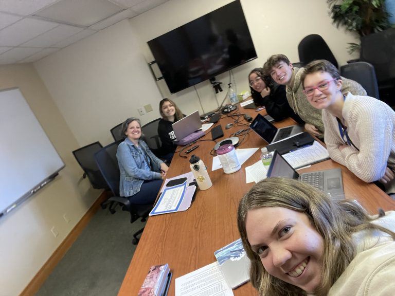
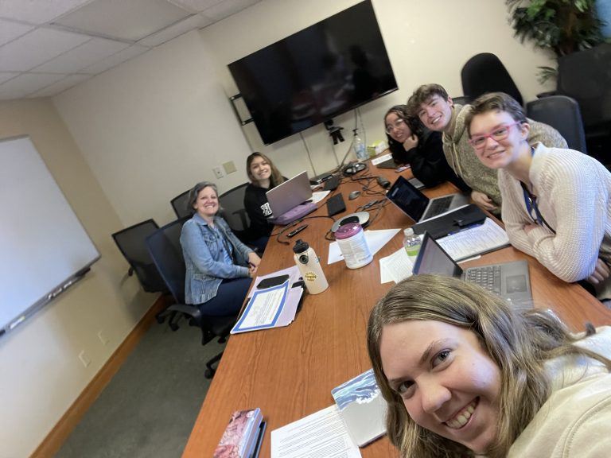